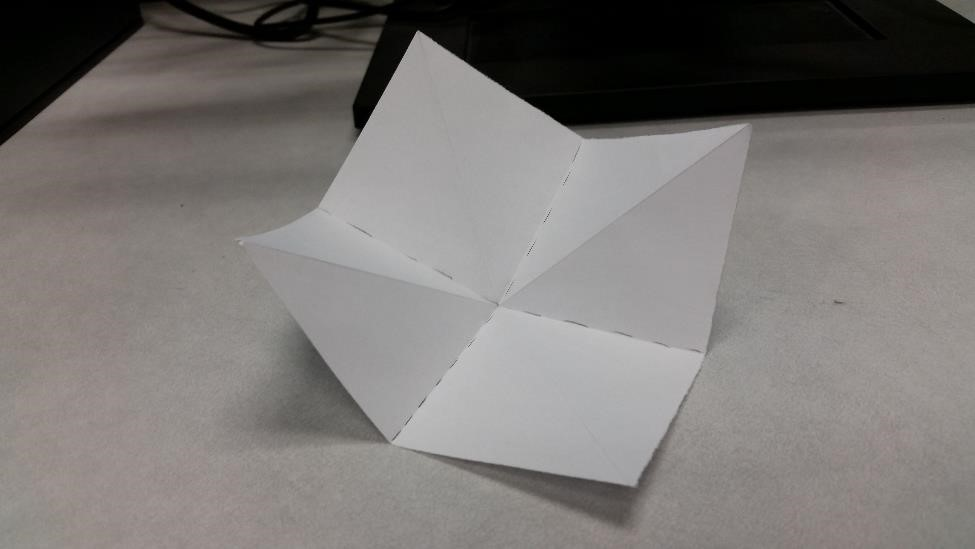
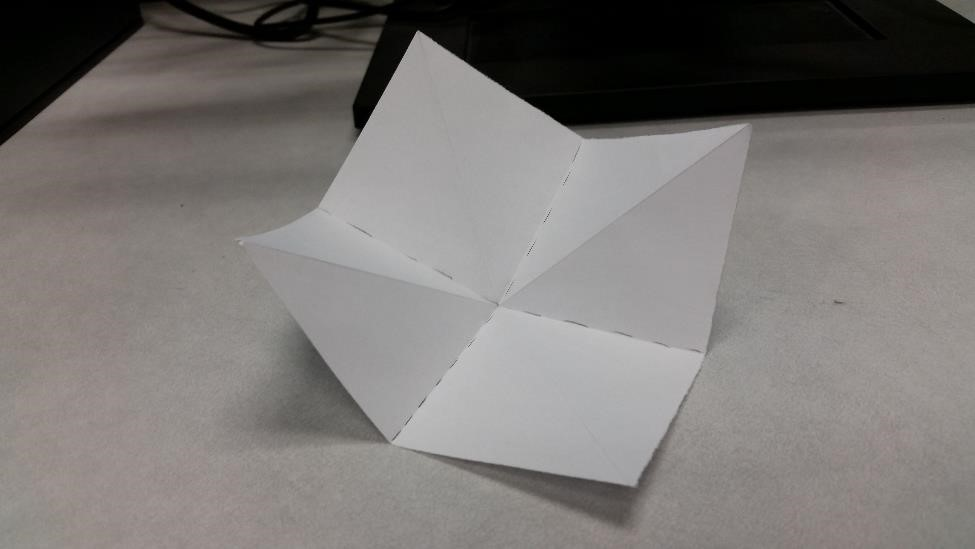
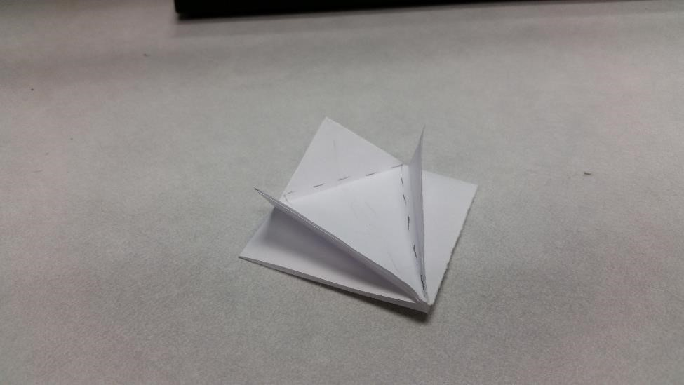
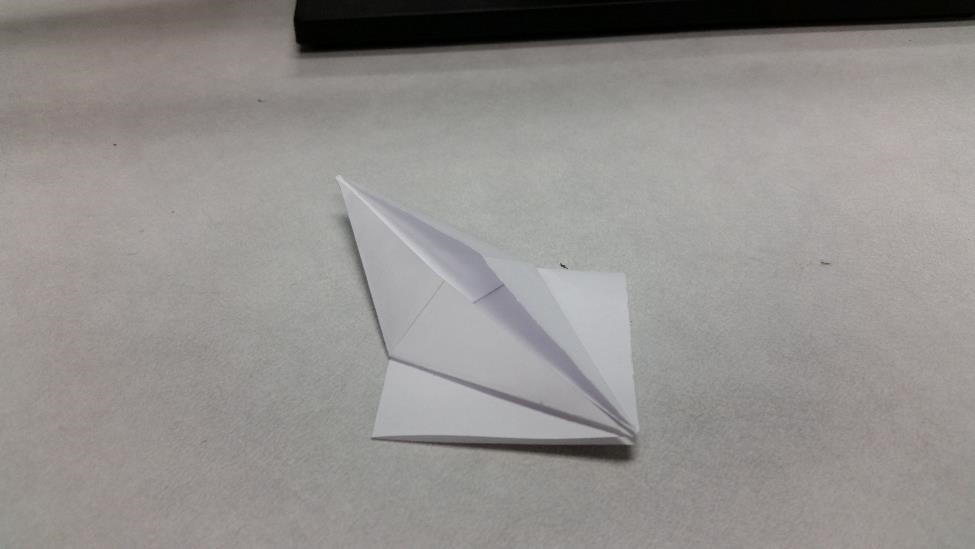
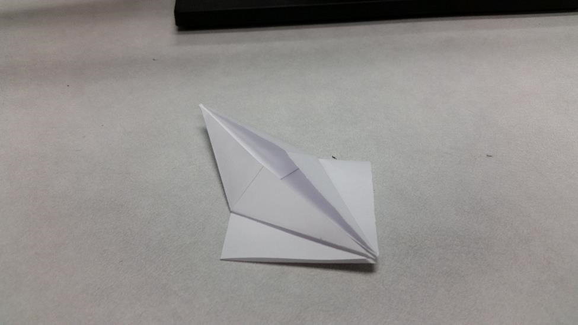
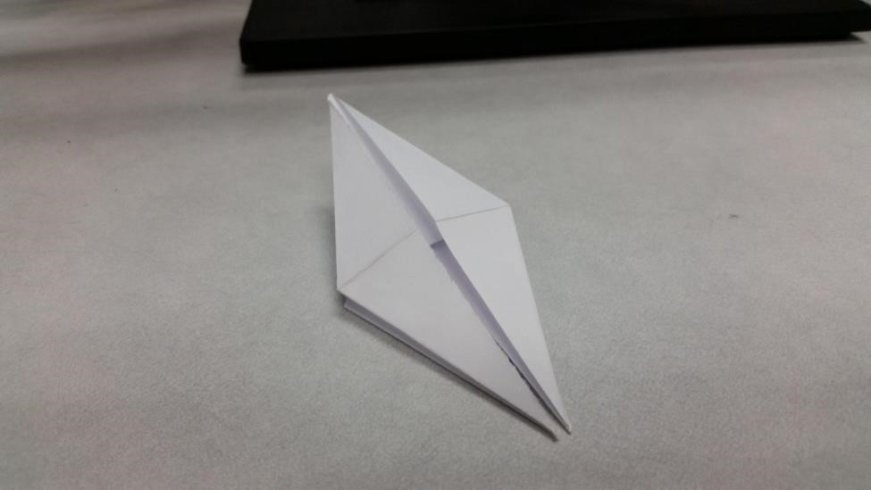

Welcome to Birdigami! If you are completely new to the world
of origami, here is a starting tutorial to help you along!
The basis for making various origami birds is the bird base. On this site,
You will need this base to make the origami flapping bird and the origami crane.
First, with a square piece of paper, fold the paper in half lengthwise and
widthwise, and then flip the paper over. Next, Fold the paper diagonally both ways.
 

Next, follow the folds and collapse the paper into a square base like so:

Next, complete the folds shown in the photo and unfold.
Now, this is the tricky part. Following the folds you made in the last
step, pull the bottom corner up and reinforce the folds.
 

Next, all you need to do is flip over the model and repeat the sam exact step
There you have it! Now you can make models like the flapping bird or the crane!